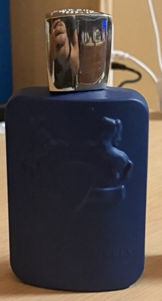

Parfums de Marly Percival. Photo by Pietro Barricelli.
Different situations call for different fragrances.
School and Work
For school or work, a fresh and clean fragrance is the best choice because it is not too strong.
Dates
For a date, a sweeter or warmer fragrance can make you stand out.
Parties and Special Events
For parties or special events, a stronger fragrance with woody or spicy notes can work well.
You should always use only a few sprays because wearing too much fragrance can bother the people around you.